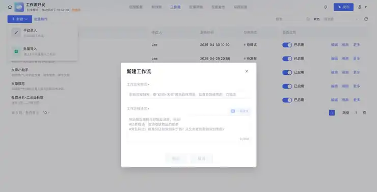
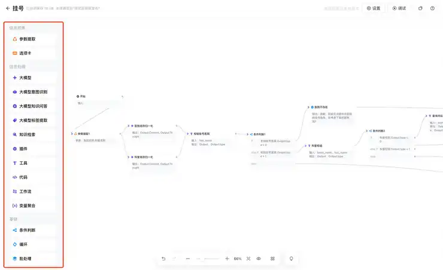
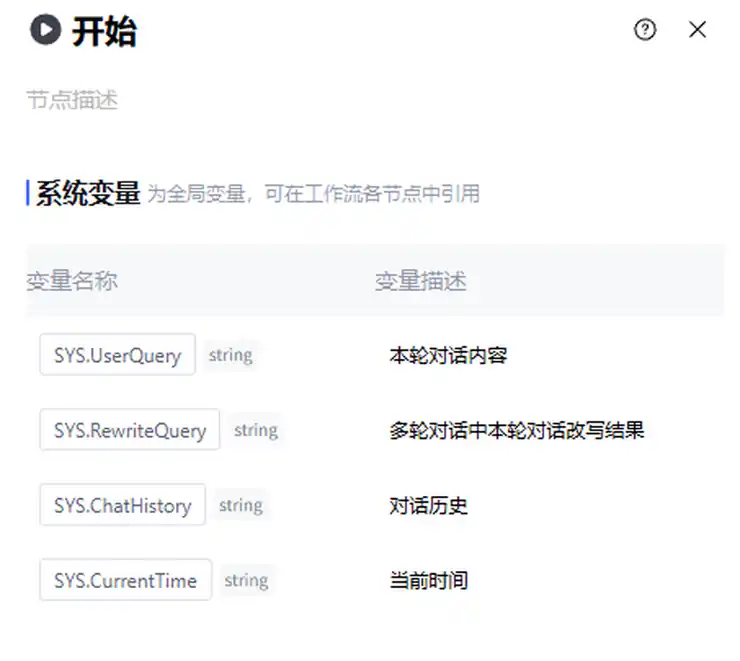
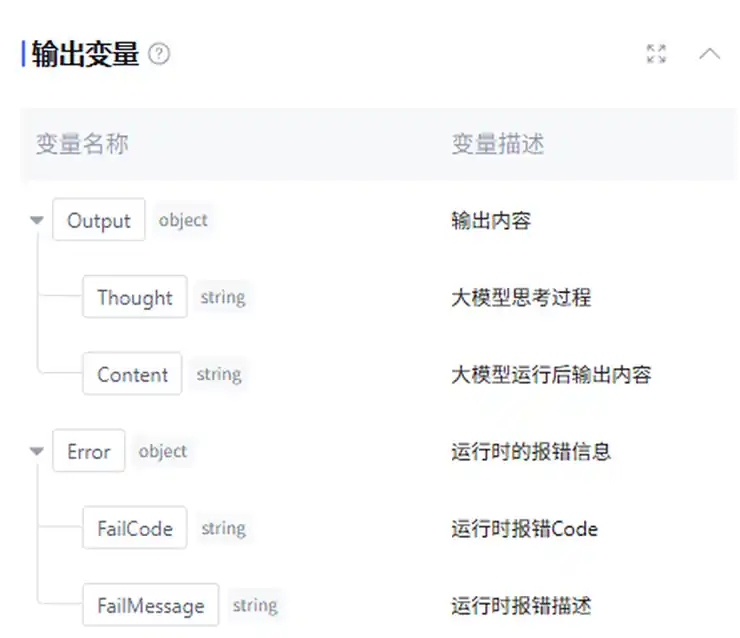
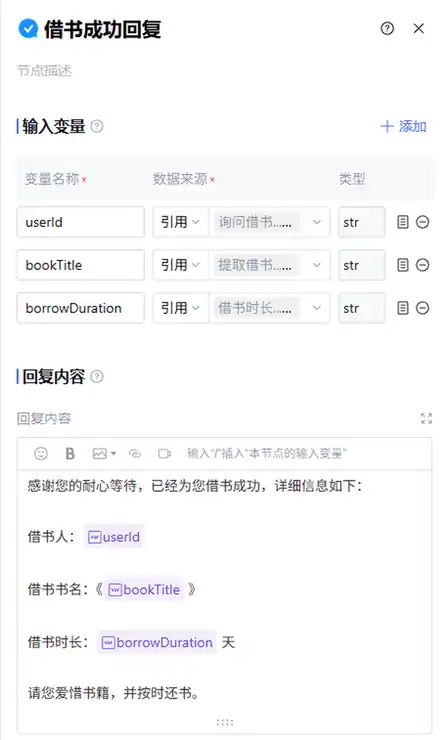

第六章｜AIGC应用与实践 · 第21次课 · 2 学时
国内无代码工作流：搭建第一条可运行路径
00 知识回顾
上一课用追问明确用途并画了流程。本课先在画布上跑通一条不带分支的路径，学会让本次材料进入模型、再显示结果。
01 任务预告
本课成果： 一条闲置物品介绍工作流。换成另一段商品材料仍能生成新文案，输入不会被写死在提示词里。
主工具： 腾讯元器，登录后在智能体应用内使用工作流管理。不需要安装编程工具或申请外部接口密钥。模型选择当前账号有权限的一款。
02 基础概念
1｜节点与连线：固定处理顺序
节点是一项具体操作，连线规定下一步去哪里。本课用“开始→大模型→回复→结束”。大模型改写文字，回复节点显示文字，结束节点完成流程；这四种职责不同。
例子： 模型成功运行但没有回复节点，调试详情可能有结果，对话区却看不到文案。
2｜变量：装入本次材料的位置
变量可以理解为一个有名称的小格子，每次运行装入不同值。“商品材料”是格子的用途，“白色台灯……”是本次值。变量名不是材料本身。
例子： 模型输入material引用“用户本轮对话内容”。这次输入台灯，下次输入耳机，提示词规则保持不变。
3｜引用与固定值：选来源，或写死内容
引用会读取上游或系统中的本次值；固定值每次都一样。处理用户材料时要选引用。如果把教师样例填成固定值，学生改了输入，输出仍会讲教师的台灯。
例子： 输入变量material的数据来源选择“引用→用户本轮对话内容”；在提示词内插入material变量标签。
4｜调试：看哪一步真正拿到了材料
调试是用一份输入试跑，查看节点的输入与输出。绿色成功状态只能说明节点执行结束，仍要看实际内容是否是这次材料；错误位置可从第一个没得到正确输入的节点找起。
03 核心案例
教师示范｜把台灯材料带进四个节点
课堂模拟输入： 白色台灯，使用半年，三档亮度正常，底座有擦痕，附电源线。没有提供品牌、价格与保修。
操作①｜创建并连接
进入应用的“工作流管理”，选择“新建→手动录入”，名称写“闲置介绍”，描述写“根据本次商品材料生成简短介绍”。确定后进入画布。

新建窗口填写名称和用途，确定后进入画布。
从左侧添加一个“大模型”和一个“回复”节点，保留开始与结束节点。拖动节点连接点，连接成：开始→大模型→回复→结束。

左侧选择节点，画布连线规定顺序；本课只保留四个需要的节点。

开始节点中，SYS.UserQuery对应本轮对话内容；它与对话历史是不同的变量。
操作②｜配置模型输入
点击大模型节点，在右侧“输入变量”添加material，数据来源选择“引用”，从列表选择系统变量“用户本轮对话内容”。选一款有权限的模型。复制下面的规则，再在末尾输入“/”，选material插入变量标签。
将商品材料改写成“标题、使用状态、外观与配件”三部分。语气自然，保留材料写明的缺点，不增加品牌、价格、续航或保修。不输出操作过程，只输出介绍。
商品材料：
这里要做的动作： 提示词末尾插入material标签，而不是把“material”当普通文字敲进去，也不要粘贴固定台灯样例作为变量值。

输入变量示例：左侧是变量名，中间选择引用，右侧选择来源节点。

提示词中插入紫色变量标签，标签会带入本次值；图中示例为borrowTime，本课使用material。
操作③｜让回复读模型结果
点击回复节点，添加输入变量answer，来源选择“引用→大模型节点→Output→Content（输出内容）”。在“回复内容”处用变量选择器插入answer。将回复接到结束；不是把模型思考过程Thought当作作品。

Content是生成内容；Thought是思考过程；Error是运行错误。回复本课成果时选择Content。

回复节点示例：先引用上游值，再把变量标签插入回复内容；本课在同一位置配置answer。
操作④｜输入台灯，再换材料
点画布右上角“调试”，在测试输入框发送模拟台灯材料。展开模型详情，看material是否为本次台灯文字，再看对话区是否显示三部分文案。第二次换成耳机材料，确认输出跟着变化。
教学结果样例： “闲置白色台灯，三档亮度正常”；“使用半年”；“底座有擦痕，附电源线”。若第二次还讲台灯，检查输入是否误设为固定值；若没有回复，检查回复的answer是否引用Content。
04 实践任务｜做一个自己的闲置介绍流程
底料任选： 蓝牙音箱：用一年，声音正常，边角有磕碰，只附充电线；双肩包：用一学期，拉链正常，底部有磨痕，无其他配件。都是课堂模拟，也可替换成自己的闲置物品描述。
操作①｜搭建并选择语气
按案例连接四个节点。模型输入material引用本轮对话，在提示词末尾插入变量。自己选择“简洁直接”或“自然耐心”语气，并把这条规则加入提示词。
操作②｜绑定回复后试跑
回复的answer引用模型Content，回复正文插入answer。发送选中的材料，打开模型详情看它收到的是这次物品描述。
操作③｜换一件物品再运行
换成另一份底料。若两个结果是同一件物品，改正固定值或变量绑定；若文案删掉缺点，在提示词补上“保留外观缺点”。
最后看三项： 材料会随输入变化；回复区显示文案；语气与自己选择一致。成果：一条可重复运行的介绍流程。
无账号的练习方式： 在豆包或千问用同一规则处理两份材料，并标出“输入、改写、显示”对应位置。这能练规则，不能代替画布连线与变量绑定练习。
05 本课总结
本课把输入、处理和回复分开配置。连线决定顺序，引用让下一步读取本次材料，回复节点把生成内容显示出来。
下节预告： 把整理与改写拆成两个模型节点，观察上一步的输出如何成为下一步输入。